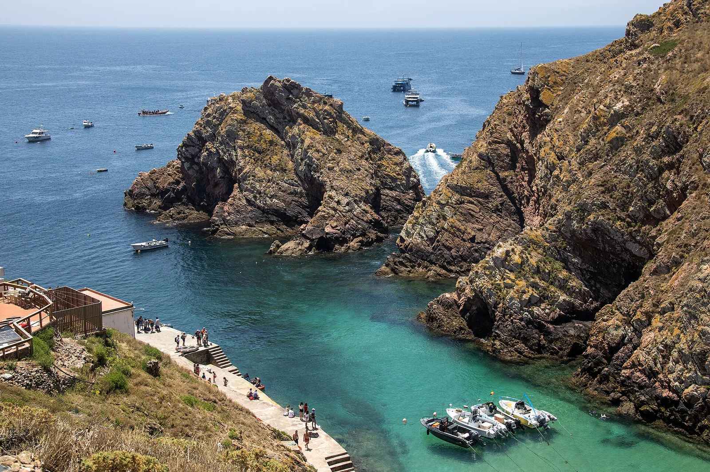

Archipel des Berlengas
Peniche, Portugal · plongée, snorkeling, kayak

Réserve de biosphère de l’UNESCO à une dizaine de kilomètres au large de Peniche. Eau claire, grottes marines et fort São João Baptista attirent plongeurs et kayakistes.
- Lieu
- Peniche, Portugal
- Niveau
- Intermédiaire
- Activités
- plongée, snorkeling, kayak
- Type d'eau
- Mer / océan
- Coordonnées
- 39.41, -9.51 (position approximative du secteur)
Dangers à connaître
- Traversée souvent agitée et houle atlantique autour des îles.
- Eau fraîche toute l’année : combinaison épaisse conseillée.
Le conseil d'Ocean Buddy
Le nombre de visiteurs par jour est limité : réserve la traversée depuis Peniche et vérifie la mer, souvent formée.
Ouvrir dans Ocean Buddy Télécharger sur l'App Store
Source : Fiche Ocean Buddy · septembre 2026 · à vérifier localement.